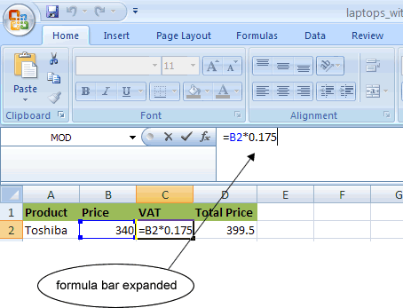
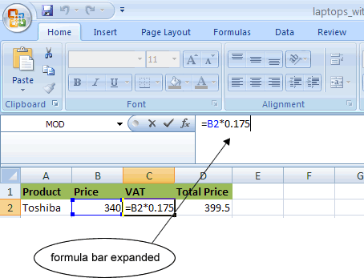

Las funciones son herramientas de calculo que ayudan a tomar decisiones, llevar a cabo acciones y ejecutar operaciones que devuelven valores automaticamente. Excel ofrece una amplia gama de funciones que permiten realizar diferentes tipos de calculo. La mayoria de las funciones necesitan datos a procesar.
Insertar funciones de Excel escribiendo la formula
Inicia la funcion agregando el simbolo = y escribiendo el nombre correspondiente, por ejemplo =SUMA.
El siguiente paso es abrir el parentesis que engloba los valores de los argumentos.
Introducimos los argumentos, pueden ser numeros, textos e incluso otras funciones.
 
